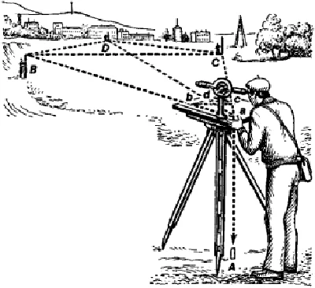
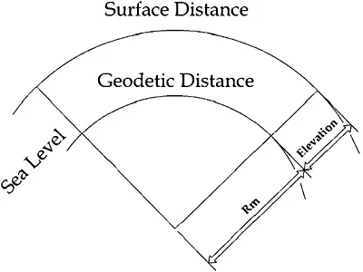
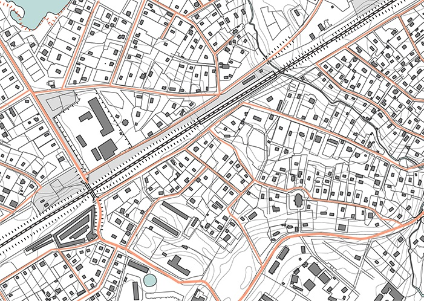
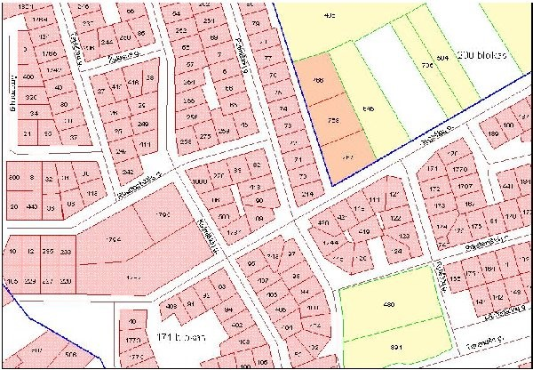
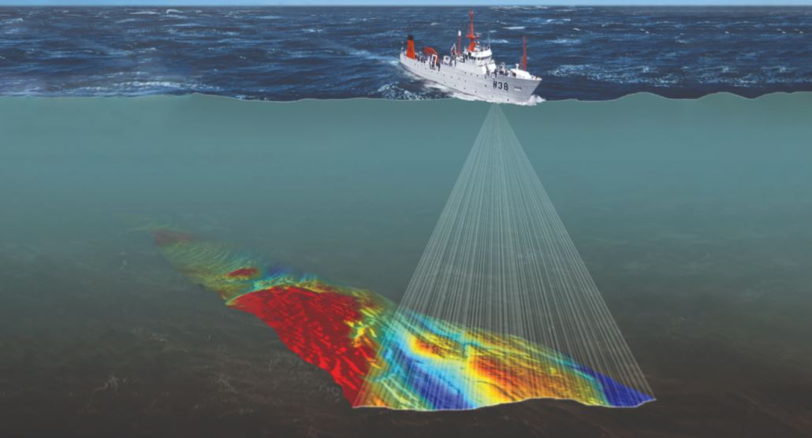
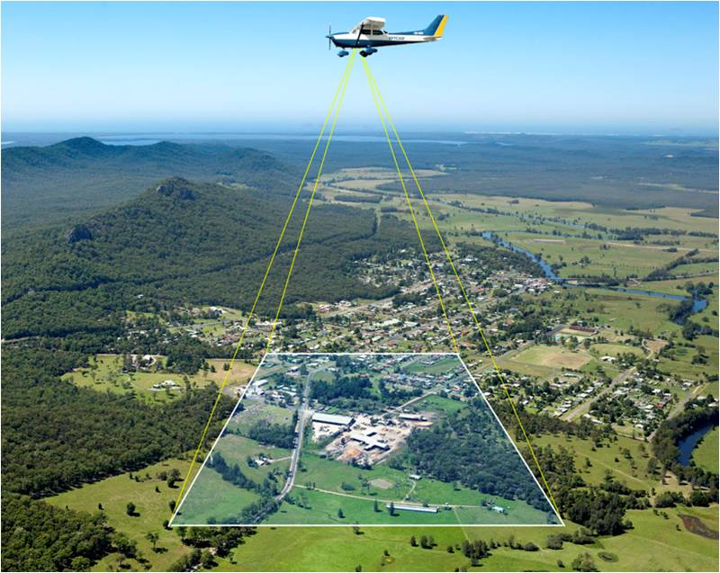
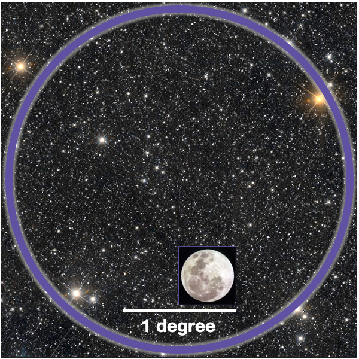
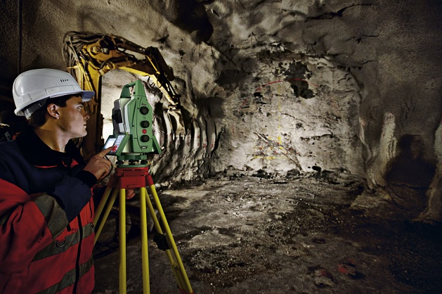
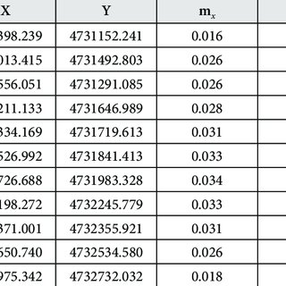

Surveying |
There are two major categories of surveying:
|  |  |
|---|---|
1. Plane SurveyingPlane surveying deals with areas of limited extent and it is assumed that the earth’s surface is a plane and therefore no corrections necessary for the earth’s curvature. |
2. Geodetic SurveyingGeodetic surveying is concerned with determining the size and shape of the earth and it also provides a high-accuracy framework for the control of lowerorder surveys. The highest standards of accuracy are necessary. Geodetic surveys cover relatively large areas (eg a state or country) for which the effects of earth curvature must be considered. |
Apart from the two main categories, we may also classify surveys according to their different branches and those disciplines directly associated with surveying:
|  |  | |
|---|---|---|
|
Topographic Surveys are concerned with the measurement and mapping of the physical features of the earth. These features are all natural and manmade features. |
Engineering Surveys cover surveys carried out as part of the preparation for, and carrying out of, engineering works, including roads, railways, pipelines, drainage etc. |
Cadastral Surveys are concerned with the measurement, definition and mapping and recording of property boundaries. |
|  |  |  |
|
Hydrographic Surveys are those made for determining the shape of the bottom of lakes, rivers, harbours and oceans. They also include the measurement of the flow of water in streams and the estimation of water resources. |
Aerial Surveys are made from an aeroplane, and for the purpose of mapping the terrain. The control for such a map is obtained from ground surveys, but the details are obtained from aerial photographs. This includes making measurements and interpretations from aerial photographs. |
Astronomic Surveys are surveys made to determine the latitude, longitude and azimuth from observations to the stars. |
|  |  | |
|---|---|---|
|
Mining Surveys are those made to determine survey control for the development of both surface and underground mines within the mining industry, and the determination of volumes in mine production. |
Computing is a specialised area of surveying where complex computer programs are used to solve problems within the surveying industry. |
Consulting is another specialised area of surveying where specialist surveyors are hired for a short period of time to advise on the requirements for a specific task or to perform the specific task. |